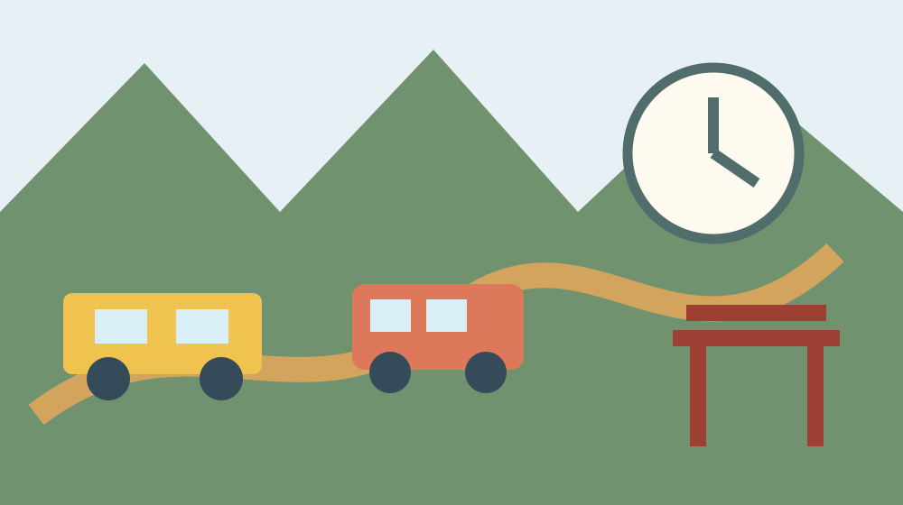

小國神社の初詣｜混雑・交通・服装・参拝前の確認
初詣の計画は、過去年の「何時なら空く」「ここへ停める」という情報を集めることではありません。小國神社がその年に出す案内、鉄道・バス、道路と現地誘導を新しい順に確認し、待ち時間が延びても安全に参拝して帰れる準備を作ることが結論です。
1. 最初にすること：当年の公式発表が出る場所を押さえる
小國神社の初詣を考え始めたら、神社公式サイトの「お知らせ」「祭典・行事」「交通案内」を確認します。検索結果に前年や数年前の初詣案内が出ても、今年の案内として使いません。記事の公開年、更新日、対象期間を読みます。当年発表がまだなければ、日程や交通は未発表のままにします。
神社公式の年中行事ページは、正月を含む一年の祭典を知る入口です。そこに固定日が記されていても、授与所の対応、祈祷受付、交通規制、臨時便、駐車場の利用が毎年同じとは限りません。参拝目的と利用日を決めた後、年末年始専用のお知らせがないか探します。
次に交通事業者と道路を確認します。天竜浜名湖鉄道、路線バス、神社が案内する開運線など、使う可能性のある運行主体を分けます。自動車なら高速道路、一般道、神社周辺の当年案内を確認します。一つの経路検索アプリだけで運休や臨時規制まで確定しません。
確認内容は、日付、出発時刻、到着後の徒歩、参拝、帰路、代替案に分けて共有します。「元日に行く」だけでは、家族の集合と帰宅を決められません。公式URL、確認日時、次に確認する日もメモします。
2. 日時を選ぶ：空いている時間を断定せず、待てる計画にする
初詣の混雑は、日付、曜日、天候、祭典、交通、駐車、周辺催事で変わります。「早朝なら必ず空く」「午後なら待たない」と断定できません。過去の体験談は参考になることがあっても、今年の人数と交通を保証しません。本ページでは具体的な空き時間を固定掲載しません。
時間を選ぶときは、混雑が何分かではなく、どれだけ待てる体調と装備かを決めます。寒い屋外で立つ時間、トイレ、食事、薬、子どもの眠気、高齢者の歩行を考えます。待てる上限を超えたら、参拝日を変える、列から離れる、家族の一部だけ別日にするという選択肢を持ちます。
夜間や早朝は、昼より人が少ないと推測しても、暗さ、冷え、凍結、交通本数、店や休憩場所が別の問題になります。照明がある場所だけを歩き、山側や川辺へ寄り道しません。防犯と安全のため、単独行動では家族へ経路と帰宅予定を知らせます。
正月期間を「元日だけ」と考えなければ、体調や交通に合わせて別日を選べます。ただし、授与、祈祷、祭典の内容は日によって異なる場合があります。目的がある人は神社公式へ確認し、日をずらせばすべて同じ対応を受けられると決めません。
同行者が多い場合、全員の都合を一つの混雑時間へ集めるより、無理のない組に分けることも検討します。境内での集合は混雑で難しくなるため、到着前の場所と、はぐれた場合の場所を決めます。鳥居や拝殿の正面を集合場所にして流れを止めません。
3. 公共交通：帰りの便から逆算し、臨時便を当てにしない
鉄道を使う場合、天竜浜名湖鉄道の公式時刻表で、利用する駅、方向、平日・土休日、年末年始の案内を確認します。通常ダイヤと異なる可能性があるため、保存済みPDFや経路検索だけで決めません。JR等から乗り継ぐ場合は、遅れと駅内移動の余裕を足します。
小國神社は袋井駅と神社を結ぶ「小國神社・開運線」の公式案内ページを設けています。運行日、予約、時刻、乗降場所などは利用する年と日で確認します。通常期に案内があることは、初詣期間も同じ条件で走る保証ではありません。臨時便があると推測して予定を組みません。
公共交通の旅程は帰りの便を先に決めます。参拝列が延びた場合、授与を待つ場合、乗り場まで歩く場合を考え、一便前を基本案にします。最終便だけに依存すると、乗り遅れが帰宅へ直結します。次便と、利用できない場合の家族送迎や宿泊を考えます。
停留所や駅で長く待つ可能性があるため、防寒と雨具、飲料を準備します。すべての場所に暖房、売店、トイレ、座席があるとは限りません。交通系ICカードやキャッシュレス決済が使えるかも交通事業者へ確認し、必要なら現金を用意します。
大きな破魔矢や授与品、ベビーカー、荷物を持って混雑車内へ乗る場合、周囲に触れないようまとめます。列車やバスの通路をふさがず、乗降に時間がかかることを見込みます。森町へのアクセスガイドと森町の公共交通も確認できます。

4. 車・駐車場・交通規制：過去の配置図を今年へ流用しない
車で行く場合、神社公式の当年交通案内、道路管理者、必要に応じて関係機関の規制情報を確認します。通常の駐車場位置が分かっても、初詣期間に同じ入口、同じ台数、同じ退出方向で使えるとは限りません。本ページでは駐車台数や臨時駐車場を固定掲載しません。
神社は催しに応じ、特定駐車場が利用できないという個別のお知らせを出した例があります。初詣も同様に、現地の用途と誘導が優先されます。前年に停められた空地、店舗、路肩、農道を今年も使えると判断しません。駐車料金や利用時間も当年案内を確認します。
渋滞中に同乗者だけを住宅前や交差点で降ろすと、歩行者と住民の危険になります。乗降は係員が案内する場所や正式な駐車区画で行います。後続の家族車両のために場所を確保せず、各車が誘導に従います。
遠州森町スマートICや森掛川ICなどを使う場合、ICの利用条件と閉鎖情報を道路事業者で確認します。ナビが示す最短の細い道へ入り、規制を回避しようとしません。警備員、標識、看板が示す経路を優先します。
駐車後は、自分の区画番号、入口、退出方向を写真やメモで残します。ただし他人の車両番号や住宅をSNSへ公開しません。夜間は懐中電灯を用意し、歩行者が多い場所でハイビームや急発進を避けます。
満車や渋滞が長い場合、路上で待ち続ける以外に、参拝日を変える、公式に案内された別手段へ変更する選択肢を持ちます。目的はその日に到着することではなく、安全に参拝し地域へ負担を残さず帰ることです。
5. 服装・持ち物：境内で待つ冬の時間を基準にする
服装は車内や駅ではなく、境内の屋外で待つ時間を基準にします。上着、手袋、帽子、首元、防水性のある靴を組み合わせ、脱ぎ着できるようにします。厚着で汗をかいた後に冷えないよう、歩行と待機の差を考えます。
足元は砂利、土、落葉、濡れ、凍結の可能性を考えます。写真映えのために滑りやすい履物を選ばず、長く歩ける靴にします。着物で参拝する場合も、裾、足袋、防寒、車の乗降、トイレ、雨を考え、無理なら別日に記念撮影を分けます。
持ち物は、スマートフォン、予備電源、現金、飲料、常用薬、ティッシュ、雨具、連絡先メモを基本にします。境内や周辺で何でも買えるとは限りません。ごみ袋を持ち、使い捨てカイロや飲食容器を境内へ残しません。
祈祷や授与を希望する場合、必要な情報、受付、初穂料、対応時間を神社公式へ確認します。現金の額や受付を非公式ブログだけで決めません。のし袋などが必要か分からなければ、神社へ問い合わせます。
大きな荷物は車へ置けても、貴重品や低温に弱い物を残さないようにします。公共交通では荷物を小さくし、両手が使える状態にします。参道でスマートフォンを見ながら歩かず、確認が必要なら流れから外れた安全な場所で止まります。
6. 子連れ・高齢者・体調に不安がある人との参拝
子どもと行く場合、氏名と保護者連絡先が分かるカードを身につけ、はぐれた場合の係員への伝え方を決めます。混雑では手をつなぎ、ベビーカーが進みにくい場合の抱っこ、荷物分担を考えます。子どもが泣いたり眠ったりしたら、列から離れる選択肢を持ちます。
トイレは、場所だけでなく列と移動時間を見込みます。到着前の駅や休憩場所で済ませ、子どもへ我慢させません。おむつ替え、授乳、温かい場所の有無は神社へ具体的に確認します。設備があると推測して出発しません。
高齢者とは、歩行距離、砂利、段差、立って待つ時間、寒さを話し合います。片道を歩けるかではなく、参拝後に駐車場や乗り場へ戻れるかで判断します。杖や歩行器を使う場合、混雑で足元が見えにくくなることを考え、空いていると断定できない時間へ無理に合わせません。
持病、妊娠、けががある場合は、主治医の指示を優先し、体調が悪ければ中止します。救護設備が必ずあると考えず、薬、保険証情報、緊急連絡を準備します。同行者一人が全員を介助する計画にせず、役割を分けます。
家族全員が同じ日に参拝できない場合、代理で願いを届ける、別日に少人数で参拝する、地元の神社へ参拝する選択肢もあります。「元日に全員で」という形を守るために安全を削りません。
7. 参拝・授与・撮影：正月の混雑でも境内の作法を守る
小國神社の御祭神や社殿、参拝の背景は小國神社の総合ページで確認できます。初詣でも、列の先にあるのは撮影スポットではなく拝礼の場です。前の人を追い越し、拝殿正面に長く残らないようにします。
鳥居、参道、手水、拝礼は神社公式の作法と現地掲示に従います。混雑時に手水の運用が通常と違う場合、設備へ無理に触れません。参拝列の整理方法が変われば係員の案内を優先します。
授与品や御朱印を受ける場合、参拝と受付の列を確認します。家族全員が別々に並んで順番を確保する、後から大人数が合流する行動を避けます。受付終了や品切れがあっても、対応する人へ無理を求めません。
写真は、撮影禁止、三脚禁止、立止まり禁止などの掲示を読みます。参拝者の顔、祈祷、子どもの行事を無断で大きく撮りません。自撮り棒や三脚で通路をふさがず、正面で何度も撮り直しません。ドローンは許可なく使いません。
飲食や休憩は指定場所で行い、参道や拝殿前で食べ歩きません。周辺施設を利用する場合も、営業時間や正月対応を各施設へ確認します。境内と地域のごみ集積所へ観光ごみを捨てず、持ち帰ります。
ペット同伴は、屋外だから自由と判断せず神社の規則を確認します。混雑、音、寒さが動物へ与える負担を考え、入れない場合に車内へ残しません。預けるか、別日にする判断を事前に行います。
8. 参拝後の帰路と、計画変更の判断
参拝後は、授与品や写真を確認する前に、同行者の人数、体調、帰りの便、駐車位置を確認します。出口周辺で立ち止まらず、安全な場所へ移動します。車の運転者は歩行者が多いことを前提に、急がず退出します。
公共交通では、乗り場へ着くまでの時間を見ます。参拝列が延びた場合、予定便を諦める判断を早めにします。走って転倒するより次便を待ちます。ただし最終便の場合に備え、事前の代替案が必要です。
雪、雨、強風、警報、運休、通行止めが出た場合、神社が参拝可能でも移動を中止する判断があります。公式発表がないSNSの噂だけで迂回せず、交通事業者と道路管理者の情報を確認します。ナビの細い抜け道へ入らないようにします。
家族が疲れている場合、周辺観光を追加しません。初詣と食事と買物を一日に詰め込むと、帰路の集中力が下がります。森町完全ガイドにある他の場所は、別の季節に訪れる計画へ回せます。
帰宅後、交通や駐車の体験を共有するなら、参拝年、日時、天候を添えます。「いつも空いている」「必ず停められる」と一般化しません。翌年には公式情報が変わるため、体験談より神社の最新案内を優先するよう書き添えます。
観光から暮らしへ関心が広がった方へ
一宮地区の日常の交通、土地、買い物を知る場合は一宮地区の暮らしへ進めます。初詣ページから不動産相談へ直接誘導せず、まず生活条件を確認してください。
遠方から宿泊を組み合わせる場合、初詣後に泊まれると当日考えず、宿泊施設のチェックイン、食事、駐車、取消条件を事前に確認します。年末年始は通常営業と異なることがあります。夜間参拝後に長距離運転を続ける危険と宿泊費を比較し、運転者の休息を優先します。周辺の飲食店も営業を推測せず、必要な食事を準備します。
団体や複数世帯で向かう場合、車列を維持しようとして急な右左折や信号無視をしないため、全車が公式経路、目的地、集合時刻を持ちます。駐車区画の場所取りや列への後からの大人数合流を避けます。境内では一団で通路を塞がず、小さい組に分かれて参拝し、退出後の安全な場所で合流します。
転倒、迷子、急病が起きた場合は、係員の案内と119番など緊急機関の指示に従います。救護所や温かい待機場所が必ずあるとは限りません。同行者の持病、薬、緊急連絡、保険証情報を共有し、子どもには係員へ名前と保護者の連絡先を伝える方法を教えます。混雑の中で独自に捜し回る前に係員へ知らせます。
参拝を終えたら、その年の交通情報を翌年用の確定資料として残さないよう、メモに対象年を書きます。家族へ共有する写真にも撮影日を付け、来年は神社公式から確認し直すことを添えます。この小さな区別が、古い規制や駐車案内を善意で広めてしまうことを防ぎます。
9. よくある質問
初詣の交通規制や駐車場は毎年同じですか
同じとは限りません。神社、交通事業者、関係機関が発表する当年の交通案内と現地誘導を確認してください。前年の臨時駐車場や入口を今年へ流用しないでください。
空いている時間を断定できますか
天候、曜日、交通、祭典で変わるため断定できません。混雑予測だけでなく、待てる服装と時間、途中で引き返す条件を決めてください。
子どもや高齢者と参拝できますか
可能かは体調と当日の混雑、足元、待ち時間によります。休憩、トイレ、防寒、連絡方法、参拝を中止する基準を先に準備してください。
御朱印や授与品の受付は何時までですか
年末年始の対応は変更され得るため固定掲載しません。小國神社公式のお知らせ、授与品、受付案内を参拝する年と日で確認してください。
10. 公式情報・出典
2026年8月9日に公式情報の入口と恒久情報を確認しました。次の初詣に関する日程、授与、祈祷、交通、駐車、規制、開門等は年末年始の当年発表で必ず再確認してください。
最終確認日：2026-08-09